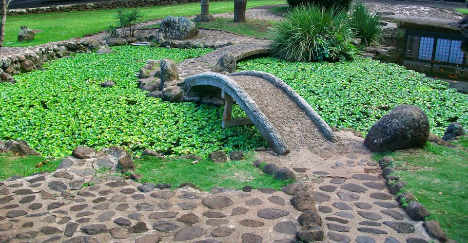

Kepaniwai Heritage Gardens
Place: Kepaniwai Heritage Gardens, ʻĪao Valley, Maui
Type: Heritage park / cultural site / historical landscape
Story it tells: A peaceful cultural park whose name preserves the memory of one of the bloodiest battles in Hawaiian history.

Kepaniwai Heritage Gardens is a cultural park located along ʻĪao Stream near Wailuku on Maui. The name Kepaniwai is commonly translated as “the damming of the waters,” a reference to the Battle of Kepaniwai fought in ʻĪao Valley in 1790 between the forces of Kamehameha I and Maui chief Kalanikūpule (son of Kahekili II). According to tradition, so many warriors died during the fighting that the waters of the stream became blocked by their bodies, giving the battle and surrounding area its unique name.
The battle marked a major turning point during Kamehameha’s campaigns to unify the Hawaiian Islands. While Maui ruler Kahekili was away on Oʻahu, Kamehameha landed his forces near Kahului and advanced into ʻĪao Valley. The fighting became one of the fiercest conflicts in Hawaiian history, lasting several days before Maui’s defenses collapsed and its forces trapped inside the valley. Kamehameha’s warriors were aided in part by western firearms and cannons operated by advisors John Young and Isaac Davis, weapons that helped shift the balance during the struggle.
Despite the violence associated with the valley’s history, the modern park presents a very different atmosphere. Established in 1952, Kepaniwai Heritage Gardens was created as a place to recognize the many communities that helped shape modern Maui. Walking paths through the gardens pass structures and landscapes associated with Hawaiian, Japanese, Chinese, Portuguese, Korean, Filipino, Puerto Rican, and New England cultural traditions, reflecting the plantation-era migrations that transformed Maui during the nineteenth and twentieth centuries.
The setting itself remains closely tied to ʻĪao Valley and central Maui’s older landscapes. Surrounded by steep green ridges and flowing water, the gardens sit near an area long associated with political power, settlement, and conflict on Maui. The contrast between the violence remembered in the name Kepaniwai and the peaceful multicultural gardens that exist there today reflects the layered history often carried within Hawaiian places and their names.